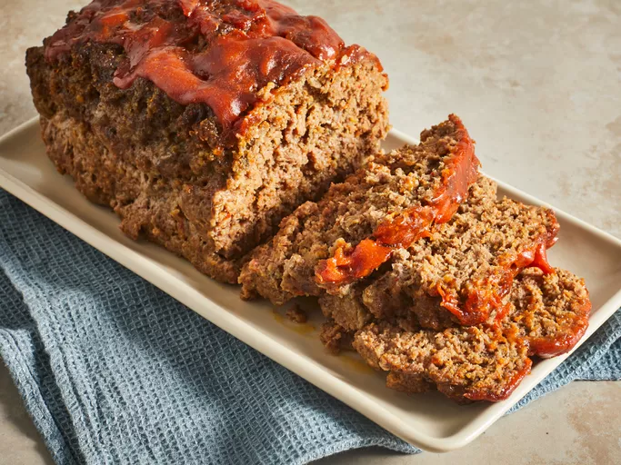

Home
classic-meatloaf

Description
When you're in need of delicious comfort food that every houseload, classic-meatloaf is the way to go
It is a classic meal and an incredible simple one
Ingredient
- Ground Chuck
- Vegetables
- Worcestershire Sauce
- Egg
- Spices
- Bread Crumbs
- Glaze
Steps
- Gather all ingredient
- Preheat the oven. Line a baking dish with lightly greased
- Place carrot, celery, onion, bell pepper, mushrooms, garlic in a food processor, Transfer for a large mixing bowl
- Bake, remove meatloaf,return to oven, cooking time will depend on shape and thickness of the meatloaf
- Serve hot and enjoy!